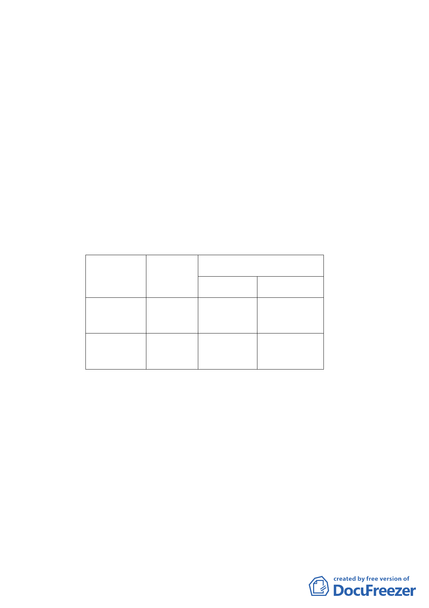

第 10132108100 號公告第二次修訂「臺北市老舊中低層建築
社區辦理都市更新擴大協助專案計畫『行動計畫一：以都市
計畫專案變更方式協助更新重建』」之適用對象及條件，市府
爰依都市計畫法第 27 條第 1 項第 4 款規定以及都市更新條例
第 20 條辦理本變更計畫。
二、計畫面積
本計畫面積為 6,313.62 ㎡，包含 5,511.22 ㎡之住宅區（特）
（西區為 1,552.00 ㎡，東區為 3,959.22 ㎡），以及 802.40 ㎡之
道路用地。
三、土地權屬
公有土地面積 253.00 ㎡（道路用地），所有權人為臺北市，管
理機關為臺北市工務局新建工程處，其餘土地權屬均為私有。
四、計畫內容
（一）分區及用地變更
地號 面積（㎡）
變更內容
原計畫
新計畫
409-10 地號 406.15 住宅區（特） 道路用地
等5筆
409-15 地號 368.72
等4筆
道路用地 住宅區（特）
（二）土地使用分區管制內容
1.土地使用強度住宅區（特）之建蔽率為 45％，容積率為 225
％。本計畫區自 91 年 7 月 15 日起 5 年內未進行開發之基地
（依都市更新條例第 10 條規定申請實施都市更新事業，或申
請建造執照為準），自第 6 年起逐年減少法定容積率 10%，逐
年減少至容積率為 200%為止。
2.本計畫區使用項目依市府 97 年 11 月 20 日府都規字第
09707298100 號公告「修訂臺北市南港經貿園區特定專用區細
部計畫通盤檢討案」中 R13 街廓規定，比照本市土地使用分
區管制自治條例第三種住宅區使用。
3.本計畫區內因調整路型致原住宅區（特）面積縮減 37.43 平方
- 12 -